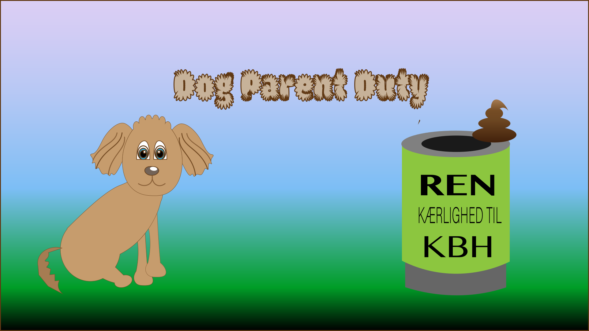
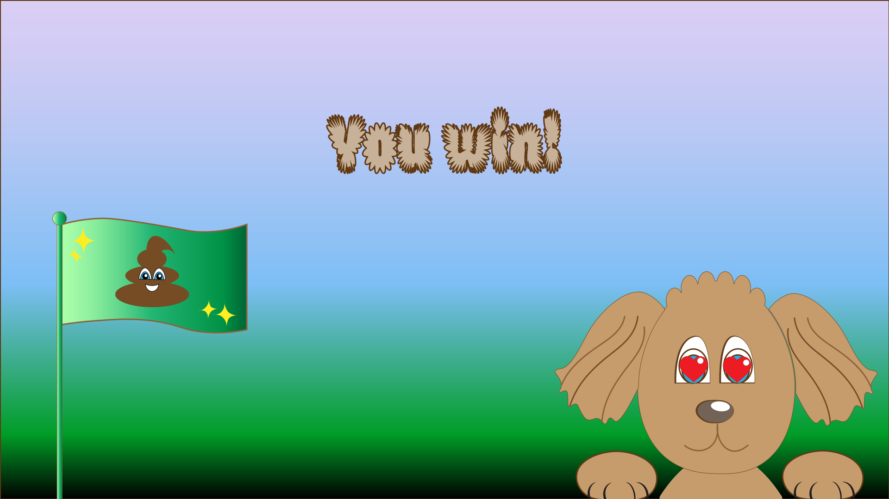
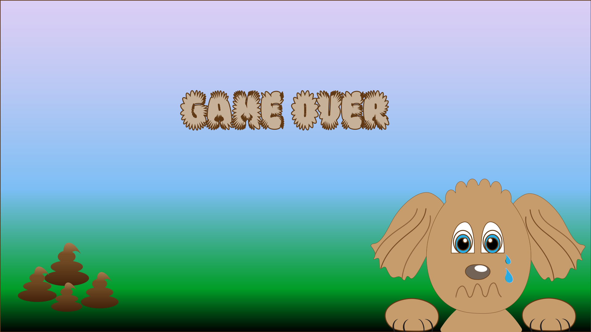
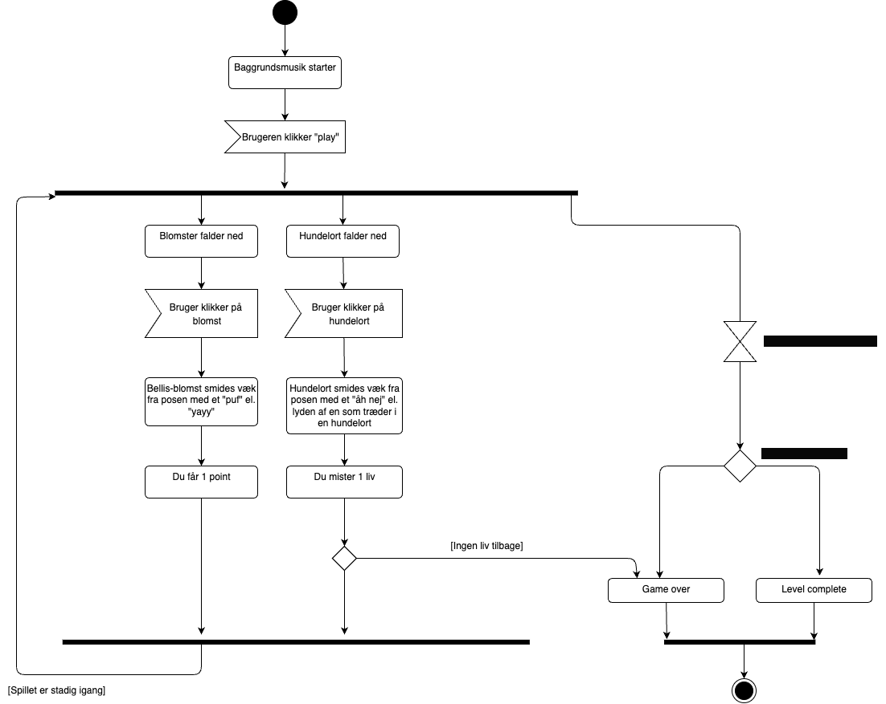
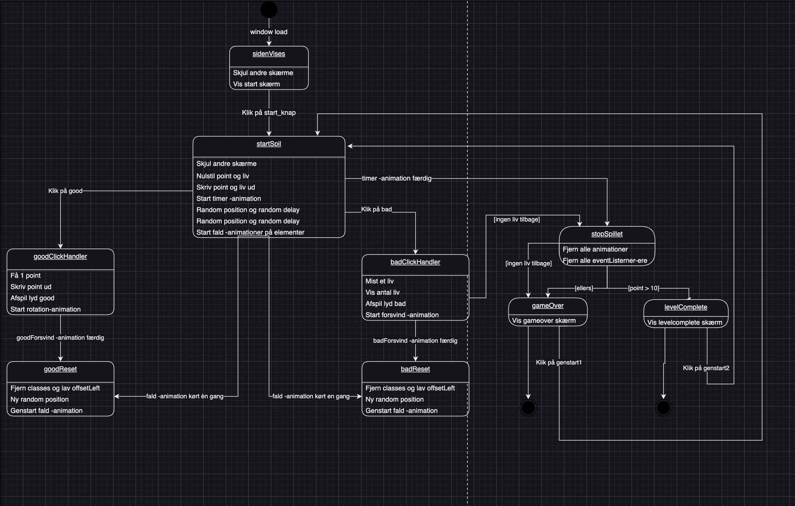

Skitser til spillet
Spilskærm

Assets


Taber- og vinderskitse


Færdige spilskærme
Startskærm
Vinder-skærm
Game-over skærm
Design
Tankerne bag designet
Ifølge med mine tanker omkring målgruppen - som jeg tiltænker børn - har jeg derfor tænkt over at gøre designet børnevenligt. Det har jeg gjort ved at kreere figurer med runde former, mange farver og et slags tegneserie-univers.
Jeg har taget udgangspunkt i Kawaii stilen, som har det såkaldte baby-bias. Hovedkarakteren bærer derfor præg af dette, med et stort hoved, store øjne og få detaljer. Idéen er udsprunget fra hverdagen som hundeejer i København - hovedkarakteren skal derfor også forestille min egen hund, Cosmo.
Pitch
"Københavns gader flyder i forvejen med skrald, så det er super ulækkert også at vade i en hundelort. Hjælp hundeejeren med at indsamle Hunni's efterladenskaber og hjælp samtidigt med at holde Kbh ren - men PAS PÅ du ikke får fat i noget af den sparsomme natur i byen!"
Spil-diagrammer
Disse to forskellige diagrammer har jeg brugt som rammen om mit spil. State Machine Diagrammet danner rammerne for hvordan spillet er bygget op i Javascript - altså hvordan effekter, lyd mm. skal tale sammen. Aktivitetsdiagrammet er opbygget af spillets handling, som altså beskriver hvad der sker i spillet og hvornår.
 